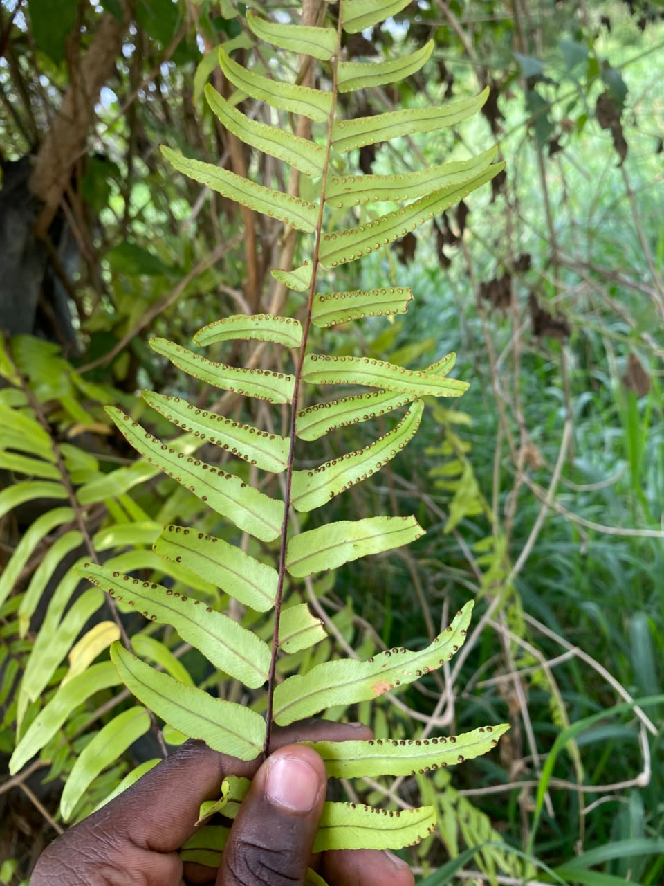
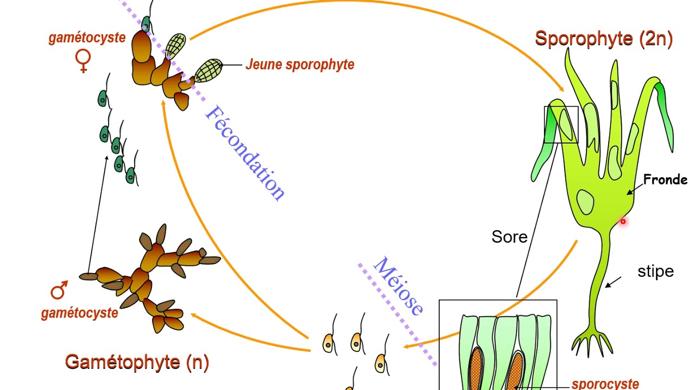
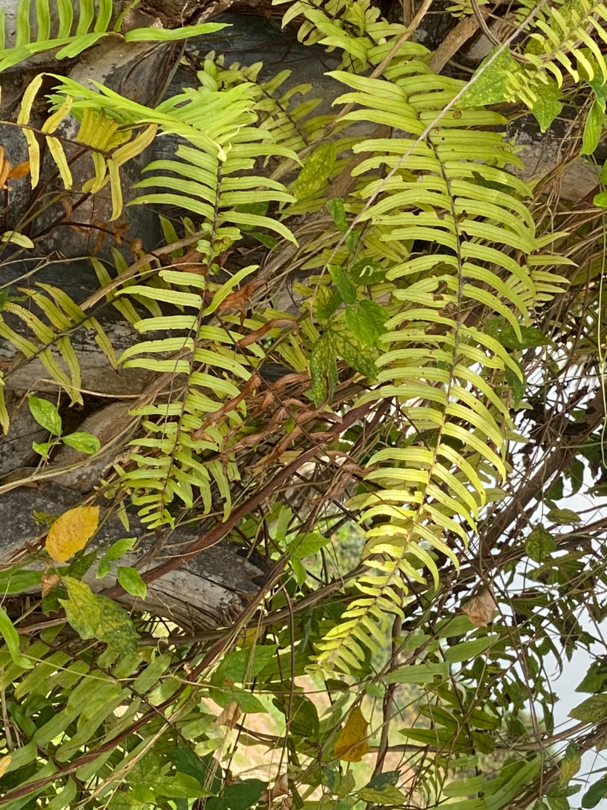

Fougères
>, environ 430 Ma ° Silurien
Le problème que ce groupe a resolu
Tenir debout et transporter de l'eau : les fougères sont les premières plantes vasculaires, avec xylème, phloème, lignine, vraies racines et feuilles.
Appareil végétatif

Ce que l'on voit est est le sporophyte. Les vaisseaux lignifiés permettent de grandir.
Reproduction

Reproduction par spores, portées dans les sores sous les frondes. Pas de fleurs. Le gamète mâle nage encore.
Observé sur le terrain
